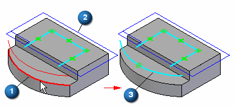
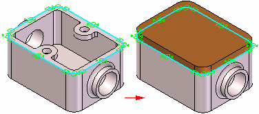

Project to Sketch command
The Project to Sketch command copies part edges or sketch elements onto the current sketch plane. For example, you can select a part edge (A) to project onto the current sketch plane (B). The projected edge (C) can then be used in the current sketch.

You can project elements associatively or non-associatively.
When you use sketch elements to construct a feature in a part document, the sketch elements are transferred to the Used Sketches collection in PathFinder. For projected elements, the associative link between the parent element and the projected element is discarded.
Projected elements and associativity
A relationship symbol  indicates that an element is associatively linked to the parent element. The symbols
indicate whether the element is associatively linked to an element in the same document
(local) or another document (peer-to-peer).
indicates that an element is associatively linked to the parent element. The symbols
indicate whether the element is associatively linked to an element in the same document
(local) or another document (peer-to-peer).
|
Link (local) |
 |
|
Link (peer-to-peer) |
 |
-
A projected element from the current part is always projected associatively. A projected element from another document can be associative or non-associative.
-
You can break the associative link on projected elements by deleting the link relationship symbols.
-
You can trim and modify projected elements, and incorporate associatively projected elements into a sketch that contains newly created non-associative elements. This allows you to create features on one part that react to design changes to another part.
-
You can also add relationships or dimensions to associatively projected elements, but if the relationship or dimension conflicts with the associative relationship to the parent element, a warning message displays.
Projecting elements from other documents
Projecting elements from another part can be useful when two parts share common characteristics. For example, you can use the Project to Sketch command to copy the edges on an existing part to create the 2D geometry required to define the base feature for a new part.

If you are editing a part in the context of an assembly (you have in-place activated the part), you can project elements from the assembly into the profile for a feature. For example, you can project elements from an assembly sketch or an edge from another part in the assembly.
An Inter-Part Associativity tutorial is available that demonstrates how to create associative inter-part features.
To associatively project an assembly sketch element or edge from another part, you must first set the following options:
On the Inter-Part tab on the Solid Edge Options dialog box, select Allow Inter-Part Links Using: Project to Curve Command From Part and Assembly Sketches.
on the Project to Sketch Options dialog box, select:
-
Allow Locate of Peer Assembly Parts and Assembly Sketches
-
Maintain Associativity When Projecting Geometry From Other Parts in the Assembly. For more information on inter-part links, see the Inter-Part Associativity Help topic.
When working outside the context of an assembly, you can also project edges from a part copy feature you created using the Part Copy command. To associatively project edges from a part copy, you must set the Link to File option on the Part Copy Parameters dialog box when you insert the part copy.
Look up more details
Sketch View commandSketch command
Closed Sketch Indicator command
Project to Sketch command bar
Project to Sketch Options dialog box
Peer Edge Locate command
Silhouette Edge Locate command
Clean Sketch command
Clean Sketch command bar
Clean Sketch Options dialog box
Copy Sketch command
Copy Sketch command bar
Copy Sketch To Target dialog box
Activate Regions command
Merge with Coplanar Sketches command
Migrate Geometry and Dimensions command
Tear-Off Sketch command
Tear-Off Sketch command bar
Tear-Off Sketch Options dialog box